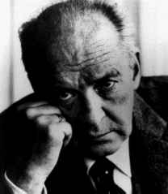

 Vladimir Nabokov
Lolita
I have often noticed that we are inclined to endow our friends with the stability of type that literary characters acquire in the reader's mind. No matter how many times we reopen "King Lear," never shall we find the good king banging his tankard in high revelry, all woes forgotten, at a jolly reunion with all three daughters and their lapdogs. Never will Emma rally, revived by the sympathetic salts in Flaubert's father's timely tear. Whatever evolution this or that popular character has gone through between the book covers, his fate is fixed in our mind, and, similarly, we expect our friends to follow this or that logical and conventional pattern we have fixed for them. Thus X will never compose the immortal music that would clash with the second-rate symphonies he has accustomed us to. Y will never commit murder. Under no circumstances can Z ever betray us. We have it all arranged in our minds, and the less often we see a particular person the more satisfying it is to check how obediently he conforms to our notion of him every time we hear of him. Any deviation in the fates we have ordained would strike us as not only anomalous but unethical. We would prefer not to have known at all our neighbor, the retired hot-dog stand operator, if it turns out he has just produced the greatest book of poetry his age has seen.